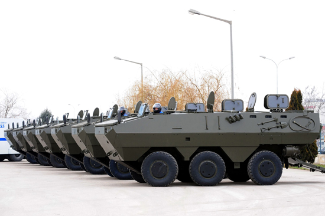

|
Tank topu kulesi monte edilebiliyor
Torun, tank topu kulesi ve 90 milimetreye kadar silahlarýn da monte edilebildiði araçta otomatik yangýn söndürme sistemi, arýza tespit sistemi ve klima gibi özellikler de bulunduðunu söyledi.
Ejder'in yaný sýra yine kendi tasarýmlarý olan ve yarý askeri araç olarak tanýmlanan Zýrhlý Toplumsal Olaylara Müdahale Aracýyla (TOMA) ilgili de bilgi veren Torun, ''TOMA, jandarma ve Emniyet Genel Müdürlüðünün envanterinde bulunuyor. Yurt dýþýna ihraç ettiðimiz TOMA ile ilgili Ermenistan'la görüþmelerimiz sürüyor. Anlaþma saðlanýrsa Ermenistan'a TOMA vereceðiz'' diye konuþtu.
Torun, daha sonra gazetecilerin sorularýný yanýtladý.
Ejder'in maliyeti hakkýndaki soru üzerine Torun, bu konuda rakam vermesinin doðru olmayacaðýný ancak ABD ve Avrupa'daki benzerlerine kýyasla daha ucuz olduðunu kaydetti.
Ejder'in henüz Türk Silahlý Kuvvetleri tarafýndan alýnmadýðý hususunun hatýrlatýlmasý üzerine Torun, 24 Nisan'da, Türkiye'de yeterli görülmüþ baþka firmalardan da teklif alýnarak 6x6, 336 adet özel maksatlý taktik tekerlekli araç ihalesine çýkýlacaðýný söyledi.
Torun, kendilerinin de 24 Nisan günü tekliflerini sunacaklarýný ve Ejder'in Türk Silahlý Kuvvetleri'nin envanterine girmesini beklediklerini kaydetti.
50 adetin üzerinde ihraç edildi
Þimdiden 50'nin üstünde Ejder aracýný ihraç ettiklerini ifade eden Torun, sözleþme ve görüþme çalýþmalarýnýn da Kolombiya dahil pek çok ülke ile sürdüðünü ifade etti.
Þirketlerinin ekonomik krizden etkilenip etkilenmediðine iliþkin soruyu yanýtlarken de Torun, ''Bir defa çok þükür ki krize elimizde kontratla girdik. Ama krizden etkilenmemek mümkün deðil, etkileneceðimizi düþünüyoruz'' diye konuþtu.
Daha sonra tesisin önündeki boþ alanda Ejder'in arazi performansýný sunmak için gösteri yapýldý. Amfibik özelliði sayesinde yaklaþýk 2,5 metre derinlikteki su havuzundan baþarýyla geçen Ejder aracýna basýn mensuplarý yoðun ilgi gösterdi. (AA)

Nurol Makina hakkýnda:
Nurol Makina Ýþletmeleri, anahtar teslimi sýnai tesis kurmak, çelik konstrüksiyon ve makina imalatý konularýnda büyük ölçekli taahhüt iþi yapmak üzere 1976 yýlýnda kurulmuþtur. Daha sonra firma bu özelliklerini koruyarak, Savunma Sanayi sektörüne de girmiþ ve 1992 yýlýndan itibaren, Sincan'daki Birinci Ankara Organize Sanayi Bölgesi'nde yer alan tesislerini faaliyete geçirmiþtir. 50.000 m2'lik açýk ve 17.000 m2'lik kapalý alana sahip olan firma, 159 kiþilik nitelikli ve deneyimli kadrosu ile bugüne kadar birçok önemli proje gerçekleþtirmiþtir.
Nurol Çelik Ýþletmeleri, çelik konstrüksiyon imalatýna Ýstanbul Yolu Kazan mevkiindeki tesisinde devam etmektedir.
Nurol Makina Ýþletmeleri;
- Milli Savunma Bakanlýðý'nca onaylý - AQAP-2110 Endüstriyel Kalite Güvence Seviye Belgesi,
- Türk Standartlarý Enstitüsü'nce onaylý - ISO-EN-9001-2000 Kalite Yönetim Sistemi Belgesi,
- Milli Savunma Bakanlýðý'nca onaylý - Tesis Güvenlik Belgesi ("Milli Gizli" gizlilik dereceli),
- Milli Savunma Bakanlýðý'nca onaylý - Üretim Müsaadesi Belgesi'ne sahiptir.
Teknolojik imkan ve kabiliyeti yüksek olan iþletmede;
- Dört ve beþ eksenli CNC tezgahlar,
- Lazer ve plazma kesme tezgahlarý,
- Yatay ve dikey torna tezgahlarý,
- Biri 2000 tonluk olmak üzere çeþitli kapasitelerdeki hidrolik ve eksantrik presler,
- Koordinat ölçü tezgahý (CMM),
- Aluminyum ve çelik kaynak (TIG, MWIG/MWAG) hatlarý,
- Çeþitli kaynak ekipmanlarý,
- Rotatörler,
- Boyahane,
- Montaj hatlarý,
- Tahribatsýz muayene olanaðý (X-ray, ultrasonik muayene,etc.),
- Universal tezgahlar
- Araç test parkuru ve havuzu
yer almaktadýr.
Kurumsal Kaynak Planlamasý konusunda MAPICS ve AXAPTA, araþtýrma, geliþtirme, tasarým ve imalat konularýnda ise CATIA, AutoCAD, SolidWorks, Surfcam, vb. yazýlýmlardan yararlanýlmaktadýr.
Kaynaklar:
|